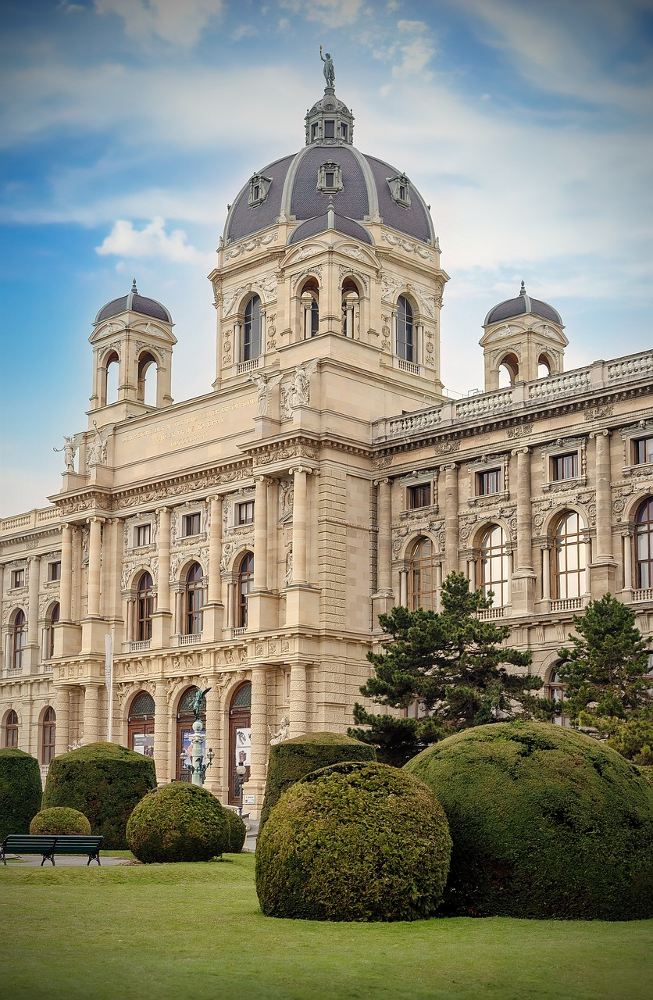
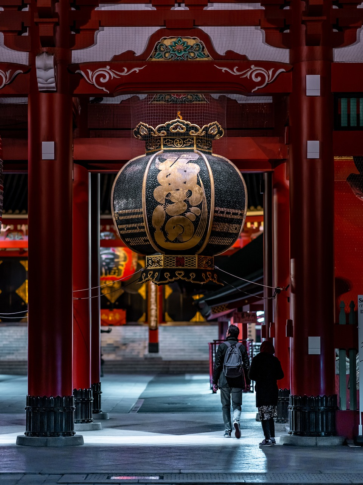

Produtos
-

Museu Kunsthistorisches
O Museu Kunsthistorisches, em Viena, destaca-se por sua vasta coleção de arte histórica, oferecendo uma experiência cultural única.
Ver detalhes -

Patagônia Argentina
Na vastidão da Patagônia argentina, o cenário é um espetáculo deslumbrante de natureza selvagem. Montanhas majestosas se erguem em contraste com lagos .
Ver detalhes -

Igreja siria
Entre os destroços da guerra na Síria, uma antiga igreja permanece como testemunha silenciosa das adversidades, refletindo a resiliência do povo e a persistência da fé.
Ver detalhes -

Aphamia Bizantino Síria
Aphamia, uma antiga cidade bizantina na Síria, revela vestígios de sua rica história por meio de ruínas e artefatos, testemunhando o esplendor e a influência bizantina na região ao longo dos séculos. As escavações arqueológicas continuam a desvendar segredos enterrados.
Ver detalhes -

Deserto do Sahara
No Deserto do Saara, uma curiosidade intrigante é a presença de fósseis marinhos, sugerindo que a região já foi coberta por oceanos há milhões de anos. Esses vestígios proporcionam uma fascinante visão da evolução geológica na vastidão do deserto.
Ver detalhes -

Têmplo Tempora
Templo Têmpora, situado no Japão, é um local sagrado e venerado, cercado por uma atmosfera serena e espiritual. Como um dos destinos mais reverenciados, o Senso-ji inspira admiração com sua arquitetura única e uma aura de devoção que transcende o tempo.
Ver detalhes